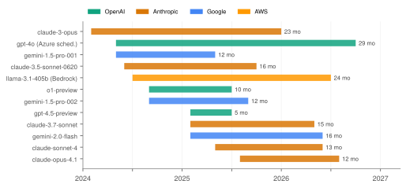
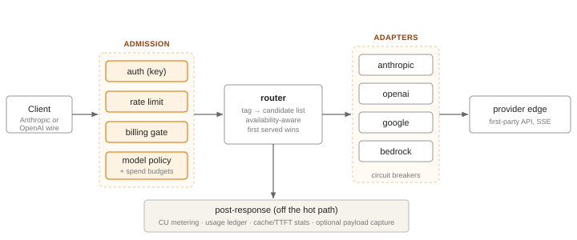
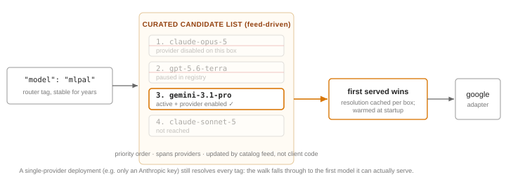
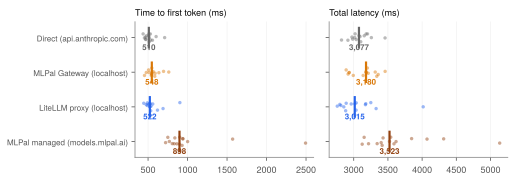
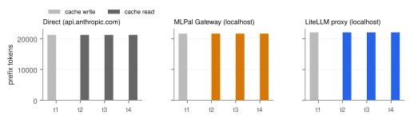

AI gateways compete on catalog breadth: OpenRouter advertises 400+ models, Portkey 1,600+, and
LiteLLM 100+ providers [1,7,5]. We argue breadth is the wrong metric. Frontier models now retire on
a ~12-month cycle — Gemini 1.5 snapshots lived exactly 12 months, Claude Opus 4.1 was
retired one year to the day after release, GPT-4.5-preview survived 4.5 months, and AWS Bedrock has
made a 12-month platform lifetime contractual [9,11,12,14] — so a catalog's tail is mostly
retired-or-dominated inventory, while the utility of a gateway concentrates in whether the handful
of current models are served well and whether references to them survive churn. We present
MLPal Gateway, an open-source (Apache-2.0), self-hostable gateway built on this hypothesis:
a curated 55-entry catalog (73 models served in the managed deployment) behind an Anthropic-wire
core with OpenAI-compatible endpoints, availability-aware router tags that resolve a stable
alias (mlpal) to the best model a given deployment can actually serve, pass-through
compute-unit metering, and per-key policy, budgets, and cache/latency observability. We measure it
three ways. (i) Gateway overhead, isolated by co-locating client and gateways:
against direct api.anthropic.com (median TTFT 510 ms, N=15), MLPal Gateway adds
38 ms at the median with a tighter tail than a minimally-configured LiteLLM proxy
(p95 716 vs 754 ms; +12 ms median) — ~1% of a 3.1 s request in exchange for
metering, policy, and budget admission. (ii) Provider-semantics preservation: prompt
caching passes through byte-faithfully on a 22k-token prefix (write→read on all systems), and the
gateway's metered cost reproduces Anthropic's list pricing to five decimals, falling 12.3× on cache
hits (0.002756→0.000224 CU, measured end-to-end). (iii) System-level utility: a
coding agent using the gateway's ranked catalog to route sub-tasks cut sub-agent cost ~10× at
near-matched correctness versus pinning a frontier model (dated 2026-07-28 [18]). A July-2026
head-to-head against OpenRouter from the same vantage point [17] is summarized as a prior study.
We release the gateway, console, SDK, and this paper's full harness and raw data.
An AI gateway multiplexes many model providers behind one API and one billing relationship. The category has consolidated around a breadth race: OpenRouter's pricing page advertises 400+ models across 70+ providers [1]; Portkey's gateway README claims routing to 1,600+ models [7]; LiteLLM supports 100+ providers [5]. Model count is legible, easy to market, and — we argue — largely disconnected from the utility a gateway delivers.
Our hypothesis is that provider agnosticism matters, but breadth does not: models are retiring at a record and accelerating pace (§2), so most of a large catalog is dead or dominated weight, while real traffic concentrates on a small set of current models per provider. What a practitioner needs from a gateway is (a) that the current models are served unhobbled — correct parameter ranges, caching, streaming fidelity, provider quirks handled per model; (b) that their own code survives retirements without edits; and (c) that the cost and behavior of every request is observable. Each of these is a per-model investment that scales to tens of models, not thousands.
MLPal Gateway is a production gateway built on this thesis. This report contributes:
Model lifetimes are compressing. Fig. 1 plots launch-to-retirement spans for twelve production API models, taken from providers' own lifecycle pages [9,11,12,14]. The 2024 cohort lived 22–29 months (claude-3-opus, gpt-4o's scheduled Azure retirement); the 2025 cohort converges on 12–16 months; GPT-4.5-preview — a flagship-priced model — survived 4.5 months with a 91-day removal notice [9]. Google's numbered Gemini snapshots have retired exactly 12 months after release (1.5-pro-001: 2024-05-24→2025-05-24; -002: 2024-09-24→2025-09-24) [12]. Claude Opus 4.1 was retired one year to the day after release (2025-08-05→2026-08-05), with a ~61-day notice [11,16].

Churn is now contractual. AWS Bedrock's lifecycle policy guarantees only 12 months of platform availability after launch, moves models to a Legacy state in which an account inactive on that model for 15 days loses access, and (for post-2026 EOLs) adds an extended-access phase at provider-set higher pricing [14]. Deprecation is no longer an exceptional event a gateway can ignore; it is a scheduled property of the substrate.
Retirement breaks production. When OpenAI removed GPT-4o from ChatGPT at GPT-5's launch with zero notice (2025-08-07), the user revolt forced reinstatement within five days [10,15]; the February-2026 retirement wave left some business customers without model access for a week [10]. On Claude Opus 4.1's retirement day, hard-coded model IDs failed simultaneously across Bedrock, Vertex, and the first-party API, and migration was complicated by a breaking parameter change in the successor [16]. OpenAI's own staff articulated the underlying tension: older models are kept in the API because "the alternative would be to risk breaking production apps whenever we launch a new model."
Serving a model well is per-model work. Getting a model's best behavior requires
model-specific handling that a lowest-common-denominator passthrough cannot provide: reasoning-budget
ranges that are discontinuous and differ per model (we maintain per-model valid ranges for Gemini's
thinking_budget); prompt-cache minimums that differ per model (a ~2.5k-token prefix
silently fails to cache on claude-haiku-4-5, whose minimum is 4,096 tokens — the request succeeds
and simply bills full price); parameter support that changes across successor models [16]; and
streaming/error quirks per provider. This work scales to a curated set, not to 1,600 models.
A catalog that is small, current, and tuned is therefore a feature, and the right unit of
comparison is utility per supported model, not the count.

The managed service (models.mlpal.ai) and the open-source distribution
(mlpal-gateway) are the same codebase. Deployment differences are confined to
composition-root seams — auth backend (local keys vs. platform SSO), billing backend (local
metering vs. platform wallet), and payload-capture default (on for self-hosters operating their own
box; off in the managed service, which retains billing metrics but never payloads) — never forks.
The distribution boots with one docker compose up: Postgres, Redis, the gateway, and
an admin console; a catalog reconcile seeds the model registry, pricing, and routing feed; 341 unit
tests and the console build gate CI.
The core endpoint is Anthropic-wire POST /v1/messages — request and response
envelopes, SSE event grammar, tool use, and cache_control are Anthropic's, for every
provider behind the gateway. OpenAI-compatible endpoints
(/v1/chat/completions, /v1/embeddings, /v1/images/generations,
/v1/audio/*) serve existing OpenAI-SDK code unchanged. A version prefix denotes a
contract revision, never a wire dialect. Every response carries the request's metered cost in an
X-MLPal-Compute-Units header and a routing envelope naming the resolved model.

mlpal,
mlpal-flash, mlpal-lite) maps to a priority-ordered, provider-spanning
candidate list maintained in the catalog feed. Resolution walks the list and picks the first
candidate the local deployment can serve (model active, not paused, provider key
configured). The client-visible name never changes; retirements and upgrades are absorbed by
feed updates.
Router tags operationalize the curation thesis. A client that ships "model": "mlpal"
survives every retirement in Fig. 1 without a code change: when a candidate is retired or
paused, resolution falls through to the next; when the feed promotes a new frontier model, the same
tag starts serving it. Because candidate lists span providers, the mechanism degrades gracefully to
single-provider deployments — an instance with only an Anthropic key still resolves all tags
(measured in §5: the managed deployment currently resolves mlpal→
claude-opus-5). The same curated intelligence is exposed declaratively as a ranked
catalog (GET /v1/catalog, 55 entries with tier, capabilities, and per-token
rates) for clients that choose their own model per task — the two consumption modes differ only in
who decides, gateway or client (§5.4 measures the latter).
Cost is metered in compute units pegged at 1 CU = $10 of provider list price:
CU = Σc tokensc·ratec / 10 over billing
components c (input, output, cache-write at the provider's 1.25× input rate, cache-read at 0.1×).
There is no markup term: self-hosters pay providers directly, and the managed tier bills tokens at
cost with a flat platform fee, so the meter is an instrument, not a margin. The ledger
stores CU at numeric(24,12) — sub-nano-dollar requests meter without truncation — and
§5.3 verifies the meter reproduces provider list pricing end-to-end. Per-key spend budgets (multiple
sliding windows, checked at admission, never cutting a running stream) and model-policy globs
(allow/deny, evaluated after alias resolution) complete the admission pipeline.
Every request writes a usage row (trace ID, resolved model, tokens, CU, latency, stream flag, time-to-first-token, cache read/write tokens); per-key aggregates expose cache hit rate, latency p50/p95, TTFT p50, and stream share; payload capture (request/response bodies, zlib-compressed, runtime-toggleable, opt-in) is a self-hosting feature — the operator owns the box and the data. The managed service keeps the metrics and never stores payloads.
Systems. Four systems serve the same model snapshot
(claude-haiku-4-5-20251001) over the same upstream: (a) direct —
api.anthropic.com/v1/messages; (b) MLPal Gateway — this work, Docker on
localhost, full admission enabled (auth, Redis rate limiting, billing gate, policy, budgets,
metering, usage persistence); (c) LiteLLM proxy — ghcr.io/berriai/litellm:main-latest
(pulled 2026-08-11), Docker on localhost, master-key auth, its native Anthropic
/v1/messages endpoint [6]; (d) MLPal managed — models.mlpal.ai
(AWS us-east-2, internet-facing ALB), reached over a residential connection, so (d) includes real
WAN/TLS costs that (a–c) partially avoid. Systems (b) and (c) call the provider with the same API
key from the same machine, so their deltas against (a) isolate gateway processing overhead:
admission, translation, relay, and metering. LiteLLM is configured minimally (no logging callbacks,
no database); it represents a thin-proxy floor rather than a tuned production deployment.
Protocol. Identical prompt (a ~150-word CAP-theorem explanation task),
max_tokens 256, streaming SSE, one cold client connection per request, one
unmeasured warmup per system, then N=15 measured trials per system with A/B/C order rotated per
trial to cancel temporal drift; 0.5 s between requests. Metrics. TTFB (first SSE byte),
TTFT (first content_block_delta), total latency, and content-chunk count, from a
single client (Apple-silicon macOS, Python httpx). Cache experiment. A ~22k-token system
prefix marked cache_control: ephemeral (well above haiku-4.5's 4,096-token cache
minimum), distinct per system so systems cannot share provider cache entries; 4 sequential
non-streaming trials per system; usage fields read from the wire. Metering fidelity is verified on
system (b) by reading the CU header on a cache-write and a cache-read call of the same prefix.

| System | TTFT med (ms) | mean±std | p95 | Δ med | Total med (ms) | Chunks med |
|---|---|---|---|---|---|---|
| Direct (api.anthropic.com) | 510 | 517±68 | 634 | — | 3,077 | 9 |
| MLPal Gateway (localhost) | 548 | 568±80 | 716 | +38 | 3,180 | 9 |
| LiteLLM proxy (localhost) | 522 | 557±112 | 754 | +12 | 3,015 | 9 |
| MLPal managed (WAN, us-east-2) | 898 | 1,017±454 | 1,848 | +388† | 3,523 | 10 |
Three observations. First, gateway overhead is noise at the median: +38 ms (MLPal) and +12 ms (LiteLLM) against a 3,077 ms total — 1.2% and 0.4% of the request. The ~25 ms between the two gateways buys the full admission pipeline (per-key policy, sliding-window budgets, CU metering, usage persistence) versus master-key auth. Second, the tail ordering inverts: MLPal's TTFT dispersion is tighter than LiteLLM's (std 80 vs 112 ms; p95 716 vs 754 ms) despite the higher median — overhead that is constant is cheaper at the tail than overhead that is variable. Third, stream fidelity is preserved: all three systems deliver the same median 9 content chunks; neither gateway coalesces or buffers the provider's stream.
Decomposing the 38 ms. To separate compute from plumbing we measured the admission
pipeline in isolation: a request that fails routing after full admission (auth, rate limit,
billing gate, policy, routing lookup, error serialization; no provider call) completes in
2.7 ms median (N=20; bare /health round trip: 0.8 ms). Gateway
compute is therefore ~2 ms of the 38; the remainder is transport — per-request client
connections to the gateway, the relay's event-loop scheduling of SSE chunks, and container
networking — plus estimation noise (with per-system σ≈70–80 ms and N=15, the median delta
itself carries roughly ±25 ms of uncertainty). The practical reading: admission-time
governance is computationally free; what a self-hoster pays for the hop is transport, and it is
bounded by tens of milliseconds against a multi-second request.
From this vantage point the managed deployment serves haiku at 898 ms median TTFT — consistent
with the 922 ms measured in our July study from the same client [17], i.e., the /v1 surface
migration and admission additions since July did not regress client-visible latency. Fresh
verification of the surface (2026-08-11): 73 models served across four providers (37 OpenAI, 14
Anthropic, 14 Google, 8 Bedrock — the latter curating current open-weight models: GLM-5, Kimi
K2.5, DeepSeek V3.2, Qwen3-Coder-480B, Llama-4-Maverick, gpt-oss-120b), a 55-entry curated
catalog, mlpal→claude-opus-5 resolution, and a CU header on every
response (0.0000145 CU for a 16-output-token haiku call).
The July-2026 study [17] measured 11 matched model pairs against OpenRouter (110 paired streaming requests plus supplements) from this same vantage. Summary, quoted as a dated prior result: despite a structural ~190 ms connection-setup handicap (single-region ALB vs. CDN edge), MLPal won median TTFT on 8 of 11 pairs — including every Anthropic model tested — with substantially tighter tails (p95 within 1.1–2.6× of median on 10 of 11 models, where OpenRouter's multi-provider load balancing produced 4.3–6.2× blowups on several); OpenRouter won median TTFT on fast/cheap models where edge proximity dominates, sustained 10–30% higher steady-stream throughput, and finished streamed responses sooner on 8 of 11 pairs; OpenRouter returned 3 empty completions (reasoning consumed the token budget) and exhibited fully-buffered streaming on some routes (Gemini Flash arriving in 1–2 chunks vs. MLPal's ~9), while MLPal returned visible content 67/67 times. Neither gateway dominated; the trade is breadth and resilience against consistency and stream fidelity. Those numbers predate this report's changes and OpenRouter's own evolution since July; we cite rather than restate them.

cache_control, 4 sequential trials per system (distinct prefixes per system). Every
system shows the canonical pattern — full cache write on trial 1, full cache read on
trials 2–4 — confirming both gateways relay Anthropic's caching semantics byte-faithfully.Prompt caching is the highest-leverage provider feature a gateway can break silently: a gateway that reorders or rewrites the prefix destroys cache identity and the client pays full price with no error. All three systems preserved it exactly (write 21,213–22,013 tokens on trial 1; read of the identical count on trials 2–4). On MLPal, metering tracked it end-to-end: the cache-write call metered 0.002756 CU and the cache-read call 0.000224 CU — a 12.3× reduction, and each figure reproduces Anthropic's list price exactly (22,013 tokens × 1.25 × $1/M input ÷ $10/CU = 0.00275; × 0.1 for reads = 0.00022) — i.e., the meter is faithful to five decimal places, verified from the wire rather than from our own configuration. Cache read/write tokens land in each usage row, so per-key cache hit rate is a first-class dashboard metric; on our development deployment, an agentic coding workload (yodex) sustains a 44% per-key cache hit rate that is directly visible there.
The curation thesis predicts that a ranked, current catalog beats a large flat one for real
workloads. A measurement from our coding agent (yodex, 2026-07-28 [18]) exercises exactly this: on
a 4-module build with delegation, the agent consulted the gateway catalog to route each sub-task by
rated complexity — trivial modules to gemini-2.5-flash-lite, harder ones upward —
cutting sub-agent cost ~10× (0.212→0.022 CU) versus inheriting the pinned frontier
model, at near-matched correctness (11/12 vs 12/12), and ~2× cheaper end-to-end than a same-model
Claude Code baseline. The enabling primitive is not 1,600 models; it is a catalog small enough to
rank honestly and current enough to trust.
| Dimension | OpenRouter | LiteLLM (OSS) | Portkey (OSS) | Helicone | MLPal Gateway |
|---|---|---|---|---|---|
| Catalog | 400+ models, 70+ providers | 100+ providers | 1,600+ models claimed | 100+ models | 55 curated entries; 73 served (managed) |
| Thesis | breadth + multi-provider resilience | universal adapter | breadth + guardrails | observability-first | curated, current, unhobbled |
| Self-host | — | MIT | MIT | Apache-2.0 (cloud-primary posture) | Apache-2.0 core (+ commercial dir) |
| Anthropic-wire endpoint | — (OpenAI wire + Responses beta) | yes | not documented | not documented | core surface, all providers |
| Fee model | 5.5% on credits; BYOK tiers | free / quote enterprise | free / $49+ hosted logs | 0% + Stripe passthrough | free self-host; managed: tokens at cost + flat fee |
| Stable model alias | openrouter/auto (auto-router) | alias config (operator-defined) | configs/routing rules | — | router tags: curated, availability-aware, feed-updated |
| Multi-provider fallback (same model) | yes, price-weighted | yes (strategies) | yes | yes | — (one pinned first-party edge per model) |
| Per-request cost on wire | via /generation lookup | response header (cost tracking) | hosted dashboards | registry-computed | CU header + routing envelope, every response |
| Per-key cache/TTFT/tail metrics | activity dashboard | via callbacks (Langfuse etc.) | hosted | core product | built-in per key: cache hit rate, TTFT p50, p50/p95 |
| Spend controls | credit limits per key | budgets per key/team | hosted budgets | tier limits | multi-window budgets + model-policy globs, admission-time |
| Payload capture (own box) | n/a (hosted) | log callbacks | local console logs | core product (hosted) | opt-in, zlib, runtime toggle; managed never stores payloads |
The surfaces reflect each system's thesis, and none dominates. OpenRouter's multi-provider failover, auto-router, and compliance controls have no MLPal equivalent; LiteLLM's provider matrix is far larger; Helicone's observability product is deeper than our console. MLPal's differences are the Anthropic-wire universal core, availability-aware curated tags, admission-time policy/budget enforcement, and a meter whose output we can verify against provider list price on the wire (§5.3) — investments that only make sense on a curated catalog.
All measurements come from a single client machine on a single day; N=15 per cell makes medians robust but p95 estimates coarse; one prompt shape, one model family (haiku-4.5) for the overhead study; totals include provider-side generation variance that dwarfs gateway deltas. The localhost design isolates gateway processing overhead but not deployment topology — a production LiteLLM with logging callbacks and a database, or MLPal behind a load balancer, will differ. LiteLLM was measured in its minimal configuration; its overhead should be read as a thin-proxy floor, not a verdict on the project. The managed-service row includes network costs the localhost rows do not. The July OpenRouter study is quoted as-dated; OpenRouter has shipped changes since. Catalog counts across vendors are not directly comparable (models vs providers vs integrations). Output quality was not evaluated — only delivery, semantics preservation, and cost. This report is written by the system's authors; the harness, raw JSON, and figure code ship in the repository so every number can be re-derived, and the strongest competitive claims (§5.2) are the ones we measured against ourselves.
Breadth is the legible metric, but the substrate has changed under it: when models live ~12 months
and churn is contractual, a catalog's value decays at the rate its entries retire, while the
gateway properties that compound — stable aliases that survive retirement, per-model tuning,
faithful caching, verifiable metering, admission-time governance — are all per-model investments
that favor curation. MLPal Gateway implements this position and measures its costs honestly: ~38 ms
of median overhead for a full admission pipeline, tails tighter than a thin proxy, provider
semantics preserved to the token, and a meter faithful to five decimals. The gateway, console,
SDK, and this paper's harness are open source (Apache-2.0) at
github.com/mlpalOld/mlpal-gateway; the
managed deployment serves the same code at models.mlpal.ai.
paper/bench/ in the repository contains the harness (harness.py,
cache_exp.py), the LiteLLM configuration used, raw results
(results-*.json), figure code, and aggregate statistics
(stats.py). Environment: set ANTHROPIC_API_KEY, a gateway key
(MLPAL_KEY), boot the gateway with docker compose up, start LiteLLM with
the shipped config, then python harness.py 15 direct,mlpal,litellm results.json. The
managed-service rows require only a key. Model snapshot: claude-haiku-4-5-20251001;
client: macOS/Apple silicon, Python 3.13 + httpx, residential network, 2026-08-11.